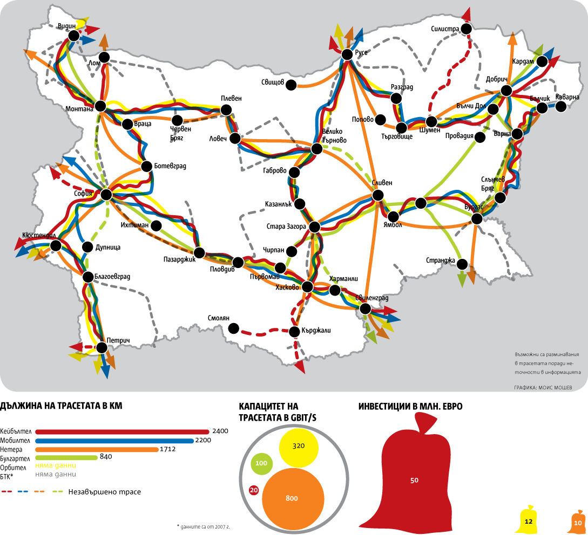

<!DOCTYPE html><html lang="bg"></html><head><meta charset="utf-8" /><!--[if lt IE 9]><script src="js/html5shim.js"></script><![endif]--><link href="css/styles.css" rel="stylesheet" /><link href="css/pygments.css" rel="stylesheet" /><title>01. HTTP и браузърите</title></head><body><header><h1>01. HTTP и браузърите</h1><nav><ul><li><button id="prev-btn" title="Previous slide">Previous Slide</button></li><li><span id="slide-number"></span> / <span id="slide-total"></span></li><li><button id="next-btn" title="Next Slide">Next Slide</button></li></ul></nav></header><div id="deck"><section><hgroup><h1>01. HTTP и браузърите</h1><h2>4 март 2013</h2></hgroup></section><section>
<hgroup><h1>За курса</h1></hgroup>
<ul><li class="action">Николай Стоицев / nstoitsev AT gmail.com</li><li class="action"><a href="http://moodle.le.tsdoit.org/course/view.php?id=13">http://moodle.le.tsdoit.org</a></li><li class="action">Ключ за записване: www2702</li></ul></section>
<section>
<hgroup><h1>Теми</h1></hgroup>
<ul><li class="action">HTTP & HTML syntax</li><li class="action">HTML & CSS</li><li class="action">HTML & CSS</li><li class="action">JavaScript Introduction</li><li class="action">JavaScript Games</li><li class="action">JavaScript Patterns</li><li class="action">PHP Basics</li><li class="action">PHP OOP</li><li class="action">PHP design patterns</li><li class="action">DBMSs</li><li class="action">SQL</li><li class="action">PHP & SQL (MySQL)</li><li class="action">MVC</li></ul></section>
<section>
<hgroup><h1>Интернет</h1></hgroup>
<p>От <a href="http://bg.wikipedia.org/wiki/%D0%98%D0%BD%D1%82%D0%B5%D1%80%D0%BD%D0%B5%D1%82">Wikipedia</a>: Интернет е глобална система от взаимносвързани компютърни мрежи.</p><ul><li class="action">Компютрите, сървърите, мобилните устройства се наричат крайни точки.</li><li class="action">Всяка крайна точка си има IP адрес.</li><li class="action">За да не помним IP адресите на сървърите, ползваме домейн имена.</li></ul></section>
<section>
<hgroup><h1>Взаимносвързани мрежи</h1></hgroup>
</section>
<section>
<hgroup><h1>Протоколи</h1></hgroup>
<p>От <a href="http://bg.wikipedia.org/wiki/%D0%9A%D0%BE%D0%BC%D1%83%D0%BD%D0%B8%D0%BA%D0%B0%D1%86%D0%B8%D0%BE%D0%BD%D0%B5%D0%BD_%D0%BF%D1%80%D0%BE%D1%82%D0%BE%D0%BA%D0%BE%D0%BB">Wikipedia</a>: Мрежов протокол е система от стандартни правила за обмяната на информация между процеси или компютри, които са свързани в една компютърна мрежа, и то по начин, гарантиращ успешната връзка между два или повече комуникационни апарата (крайни устройства).</p></section>
<section>
<hgroup><h1>Клинет-сървър</h1></hgroup>
</section>
<section>
<hgroup><h1>Демо</h1></hgroup>
<p><a href="http://www.youtube.com/watch?v=PBWhzz_Gn10&feature=share&list=UUwecCf7kkl97hfWparLHYvg">Warriors of the Net</a></p></section>
<section>
<hgroup><h1>HTTP</h1></hgroup>
<p>Протокол за трансфер на хипертекст.</p><ul><li class="action">Клиент - Браузър.</li><li class="action">Сървър - Уеб сървър.</li><li class="action">Уеб сървъра и браузъра си говорят по HTTP.</li></ul></section>
<section>
<hgroup><h1>HTTP заявки</h1></hgroup>
<p>Заявка, е съобщение, което се изпраща от уеб браузъра към уеб сървъра.</p><p>То може да бъде няколко вида:</p><ul><li class="action">GET</li><li class="action">POST</li><li class="action">PUT</li><li class="action">DELETE</li><li class="action">HEAD</li><li class="action">и още три...</li></ul></section>
<section>
<hgroup><h1>HTTP комуникация</h1></hgroup>
<p>Стандартно зареждане на facebook:</p><ul><li class="action">Браузъра изпраща GET заявка към facebook за получаване на началната страница.</li><li class="action">Сървъра на facebook отгоравя като изпраща отговор на клиента.</li><li class="action">Браузъра прочита отговора и го показва на екрана.</li><li class="action">Потребителя си пише името и парола и натиска бутона за вход.</li><li class="action">Браузъра изпраща POST заявка с името и паролата на потребителя.</li><li class="action">Сървъра на facebook проверя дали са коректни.</li><li class="action">Ако не са коректни, сървъра връща съобщение в което записва грешката.</li><li class="action">Ако са коректни, сървъра изпраща нова страница с профила на потребителя и news feed-a му.</li></ul></section>
<section>
<hgroup><h1>HTML</h1><h2>HyperText Markup Language</h2></hgroup>
<p>Език за описване на съдържанието на уеб страниците. Пример.</p></section>
<section>
<hgroup><h1>Зареждане на страници</h1></hgroup>
<ul><li class="action">Браузъра изпраща заявка към сървъра.</li><li class="action">Сървъра отговаря с HTML.</li></ul></section>
<section>
<hgroup><h1>Как работи браузъра</h1></hgroup>
<div class="highlight"><pre><span class="x">&lt;!DOCTYPE html&gt;</span>
<span class="x">&lt;html lang=&quot;en&quot;&gt;</span>
<span class="x">&lt;head&gt;</span>
<span class="x">  &lt;title&gt;My title&lt;/title&gt;</span>
<span class="x">&lt;/head&gt;</span>
<span class="x">&lt;body&gt;</span>
<span class="x">  &lt;h1&gt;My header&lt;/h1&gt;</span>
<span class="x">  &lt;a href=&quot;http://example.com&quot;&gt;My Link&lt;/a&gt;</span>
<span class="x">&lt;/body&gt;</span>
<span class="x">&lt;/html&gt;</span>
</pre>
</div>
</section>
<section>
<hgroup><h1>Как работи браузъра</h1></hgroup>
<p>HTML-a се описва в дървовидна структура. Тя се нарича DOM дърво.    </p></section>
<section>
<hgroup><h1>Как работи браузъра</h1></hgroup>
</section>
<section>
<hgroup><h1>HTML</h1></hgroup>
<p>Описва само съдържанието.</p></section>
<section>
<hgroup><h1>CSS</h1><h2>Cascading Style Sheets</h2></hgroup>
<p>Съдържа се в HTML-a. Описва как да изглежда HTML документ. Например:</p><ul><li class="action">Какъв цвят да е даден текст.</li><li class="action">Кое колко да е голямо.</li><li class="action">Как да са подредени нещата на екрана.</li><li class="action">И още много... ще имаме отделни упражнения за него.</li></ul></section>
<section>
<hgroup><h1>Пример CSS</h1></hgroup>
<div class="highlight"><pre><span class="x">&lt;!DOCTYPE html&gt;</span>
<span class="x">&lt;html lang=&quot;en&quot;&gt;</span>
<span class="x">&lt;head&gt;</span>
<span class="x">  &lt;title&gt;My title&lt;/title&gt;</span>
<span class="x">  &lt;link rel=&quot;stylesheet&quot; href=&quot;style.css&quot; type=&quot;text/css&quot; /&gt;</span>
<span class="x">&lt;/head&gt;</span>
<span class="x">&lt;body&gt;</span>
<span class="x">  &lt;h1&gt;My header&lt;/h1&gt;</span>
<span class="x">  &lt;a href=&quot;http://example.com&quot;&gt;My Link&lt;/a&gt;</span>
<span class="x">&lt;/body&gt;</span>
<span class="x">&lt;/html&gt;</span>
</pre>
</div>
</section>
<section>
<hgroup><h1>Пак как работи браузъра</h1></hgroup>
</section>
<section>
<hgroup><h1>Интерпретиране на CSS</h1></hgroup>
</section>
<section>
<hgroup><h1>Интерпретиране на CSS</h1></hgroup>
</section>
<section>
<hgroup><h1>Още</h1></hgroup>
<ul><li class="action"><a href="http://taligarsiel.com/Projects/howbrowserswork1.htm">How browsers work</a></li></ul></section>
<section><hgroup><h1>Въпроси</h1></hgroup><ul><li><a href="http://moodle.le.tsdoit.org/course/view.php?id=13">http://moodle.le.tsdoit.org</a></li></ul></section></div><script src="js/jquery-1.5.2.min.js"></script><script src="js/jquery.jswipe-0.1.2.js"></script><script src="js/htmlSlides.js"></script><script src="js/pusher.js"></script><script type="text/javascript">$(function() {
  htmlSlides.init({ hideToolbar: true });
});

var pusher = new Pusher('a2024b659f492cab86cc');
pusher.subscribe('lectures');
pusher.bind('refresh', function(data) {
  location.reload(true);
});</script></body>